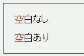
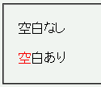

セレクタに :first-letter などの擬似要素を用いるとき、擬似要素名称の次（中括弧やカンマとの間）に空白類文字を置かないと擬似要素が認識されず、そのセレクタが無視されてしまう。
<style type="text/css">
p.a:first-letter{
color:red;
}
p.b:first-letter {
color:red;
}
</style>
<p class="a">空白なし</p>
<p class="b">空白あり</p>
空白なし
空白あり
p要素内にある最初の文字を赤色で表示させる構文です。
Moz1.0での表示（標準モード）
WinIE6.0での表示（標準モード）
擬似要素を使う使わないに限らず、セレクタと左括弧の間には常に空白類文字を置くように心がけてください。セレクタのグループ内に擬似要素を含める場合は擬似要素名称とカンマの間にも空白類文字を置いてください。
h1:first-letter , h2:first-letter {
……
}
互換モードでは空白類文字を置かなくてもセレクタが機能します。
WinIE6.0では標準・互換モードともに標準モードで不具合の発生が確認されました。